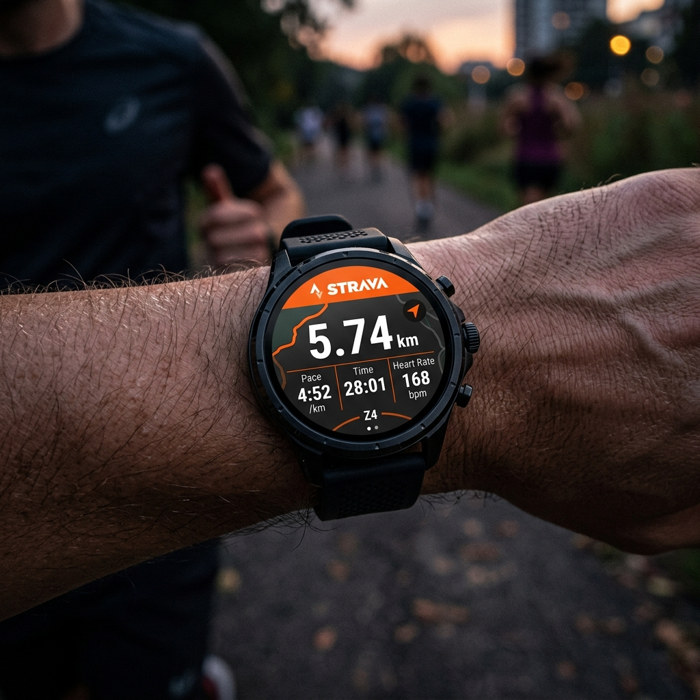

Die Erkundung der freien Natur ist eine fantastische Möglichkeit, vom Alltag abzuschalten, aber das Navigieren auf Pfaden in der Wildnis erfordert Vorbereitung und Wachsamkeit. Früher waren Wanderer auf Papierkarten und Handkompasse angewiesen. Während diese Tools auch heute noch unverzichtbare Backups sind, fungiert Ihre Wear OS-Smartwatch als unglaublich leistungsfähiges primäres Outdoor-Tool. An Ihrem Handgelenk befestigt, bietet es Routenanweisungen in Echtzeit, Höhenverfolgung, Kompassrichtungen und Sturmwarnungen.
Für Smartwatches wie die Samsung Galaxy Watch, Google Pixel Watch und TicWatch gibt es ein umfangreiches Ökosystem an Trail-Navigationssoftware. Schauen wir uns die besten Wear OS-Anwendungen und -Tools für Wanderer, Rucksacktouristen und Trailrunner an, die ihre Umgebung sicher erkunden möchten.

Warum Wanderer spezielle Smartwatch-Apps benötigen

Standardkartenanwendungen (wie Google Maps) sind für Stadtstraßen und Autobahnen konzipiert; Sie werden schnell unbrauchbar, wenn Sie am Ausgangspunkt des Wanderweges vorbeigehen. Ihnen fehlen topografische Konturen, Wegmarkierungen, Höhenindikatoren und vor allem Offline-Datenbankunterstützung. Wenn Sie in einem tiefen Tal das Mobilfunksignal verlieren, wird auf einer Standardkarte ein leerer Bildschirm angezeigt. Spezielle Wanderanwendungen lösen dieses Problem, indem Sie topografische Karten vorab herunterladen und GPX-Navigationspfade direkt auf Ihre Uhr importieren können.
Top Wear OS Wander- und Karten-Apps
1. Outdooraktiv
Outdooractive ist eine Premium-Kartenanwendung mit hochdetaillierten topografischen Karten, die offizielle Wegenetze, Wanderwegeklassifizierungen und Höhenlinien enthalten. Die Wear OS-Begleit-App ist robust: Sie zeigt Vektorkarten direkt auf Ihrem Handgelenk an, verfolgt Ihre Geschwindigkeit, Distanz und Höhe und bietet Abbiegehinweise entlang der Routen, die Sie mit Ihrem Konto synchronisiert haben. Es läuft völlig eigenständig und greift auf das interne GPS der Uhr zu.
2. Komoot (Routenplanung & Navigation)
Komoot ist bekannt für seine Routing-Engine, die Wege nach Oberflächentyp (z. B. Schotter, Asphalt, Singletrail-Schotter) und Höhenprofil klassifiziert. Die Wear OS-App dient als Navigations-Dashboard. Es zeigt visuelle Pfeile an, die bevorstehende Abbiegungen, die Entfernung zur nächsten Kreuzung und Ihre aktuelle Höhe anzeigen. Wenn Sie vom Kurs abweichen, vibriert die Uhr und gibt Anweisungen, um Sie wieder auf den richtigen Weg zu bringen.
3. Locus Map (Offline-Vektorkartierungs-Kraftpaket)
Für ernsthafte Rucksacktouristen und Entdecker, die tief in Gebiete ohne Mobilfunkempfang vordringen, ist Locus Map das ultimative Tool. Mit dem Wear OS-Add-on können Sie unglaublich detaillierte Offline-Vektorkarten auf Ihre Uhr laden. Sie können das Design anpassen, Höhenprofile anzeigen und GPX-Tracks überlagern. Die App läuft reibungslos ohne Telefonverbindung und bietet absolute Sicherheit bei Ihrer Positionsbestimmung.
4. Kompass und Höhenmesser (Systemtools)
Manchmal braucht man keine vollständige Karte; Sie müssen nur wissen, in welche Richtung Sie blicken und wie hoch Sie geklettert sind. Wear OS-Geräte verfügen über integrierte barometrische Höhenmesser und Magnetkompasse. Nutzung nativer Tools (oder Apps wie Kompass von Google oder Samsung) bietet leichte, batterieeffiziente Richtungskontrollen, die überall auf der Welt funktionieren, ohne den Akku zu belasten.
Profi-Tipp: Offline-Karten vorab herunterladen
Laden Sie Ihre Kartenregion immer offline in Ihrer Wander-App auf Ihr Telefon herunter vor Du verlässt das Haus. Sobald Sie am Ausgangspunkt angekommen sind, ist das Mobilfunksignal möglicherweise zu schwach, um die detaillierten Kartenkacheln abzurufen, wodurch Ihre Navigations-App unbrauchbar wird.
Funktionsvergleich der Wander-App
| App-Name | Offline-Kartenunterstützung | GPX-Import | Kontur-/Topolinien | Am besten für |
|---|---|---|---|---|
| Outdooraktiv | Ja (Premium) | Ja | Ja | Detaillierte topografische Routennavigation |
| Komoot | Ja | Ja | NEIN | Turn-by-Turn-Routenführung |
| Locus-Karte | Ja (vollständige Unterstützung) | Ja | Ja | Offline-Kartierung der tiefen Wildnis |
| Systemkompass | N / A | NEIN | NEIN | Leichte Orientierungsprüfungen |
Outdoor-Sicherheit und Batterieoptimierung auf Trails
Eine Smartwatch kann auf einer Wanderung das Leben retten, aber nur, wenn sie über Batteriestrom verfügt. GPS-Tracking und Bildschirmdarstellung verbrauchen viel Energie. Beachten Sie diese Optimierungsschritte, bevor Sie Ihre Wanderung antreten:
- Always-On-Display (AOD) ausschalten: Lassen Sie den Bildschirm der Uhr schlafen. Aktivieren Sie es nur dann mit einer Geste oder einem Tastendruck, wenn Sie Ihre Peilung überprüfen müssen.
- Aktivieren Sie den Batteriesparmodus / Nur-Uhr-Modus: Wenn die Batterie fast leer ist und Sie die Uhr für eine Notfallnavigation aufbewahren müssen, aktivieren Sie den Batteriesparmodus. Es unterbricht die Hintergrundsynchronisierung und lässt das GPS nur für die Verfolgung aktiv.
- Tragen Sie eine Powerbank: Nehmen Sie bei mehrtägigen Wanderungen eine leichte Powerbank und den Ladepuck Ihrer Uhr mit. Eine 30-minütige Aufladung während der Mittagspause kann Ihren Akku für den Nachmittag aufladen.
Letzte Gedanken
Mit topografischer Kartendarstellung, Abbiegehinweisen, Höhenmessern und Magnetkompassen ist Ihre Wear OS-Smartwatch eine leistungsstarke Ergänzung Ihrer Wanderausrüstung. Wenn Sie eine spezielle App wie Outdooractive oder Locus Map auswählen und Ihre Routen offline herunterladen, können Sie beruhigt auf die Trails gehen. Bereiten Sie Ihre Ausrüstung vor, konfigurieren Sie Ihre Uhr und genießen Sie Ihre Wildniserkundung sicher!